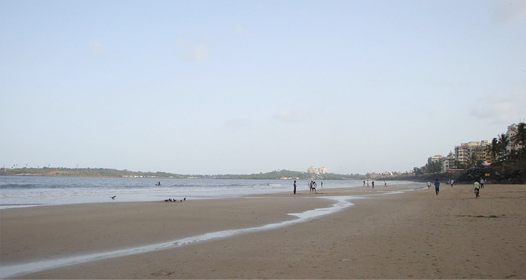
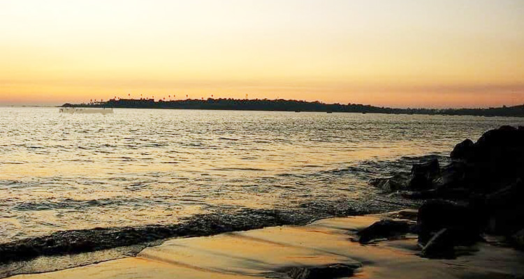

Versova Beach is in the Andheri suburb, and it is the cleanest and among the least visited beaches in Mumbai. Because of occasional strong currents and high tides, swimming in the water is prohibited. However, nothing can stop you from admiring the sunset from the shore on a rather slumber evening. The 3 km long rocky Versova Beach faces the Arabian Sea, and people also visit the place in the hope to capture some Olive Ridley turtles in their lens. Horse-riding and cycling are the other activities available at Versova, apart from satisfying the urges of beach photography. Versova is also known for its fish market. It is the home to Koli people – the oldest fishing community of Mumbai.

